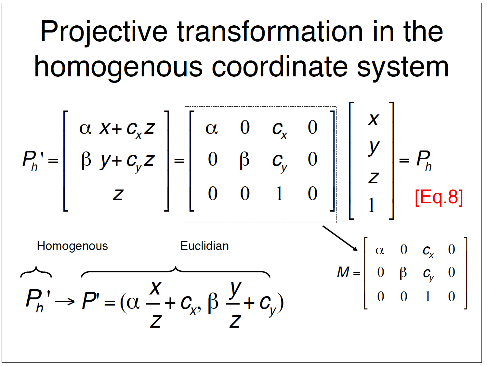
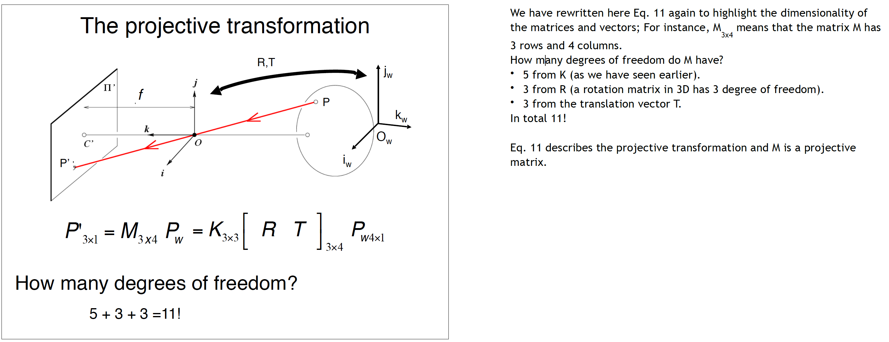
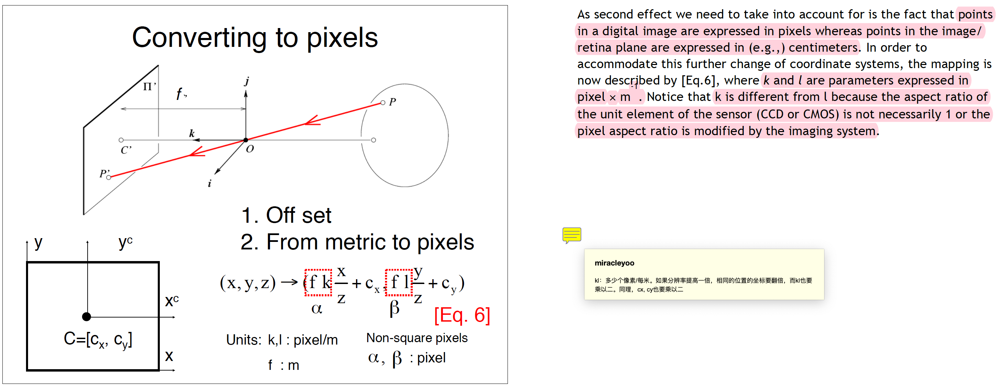
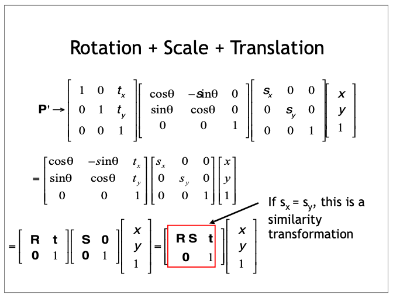
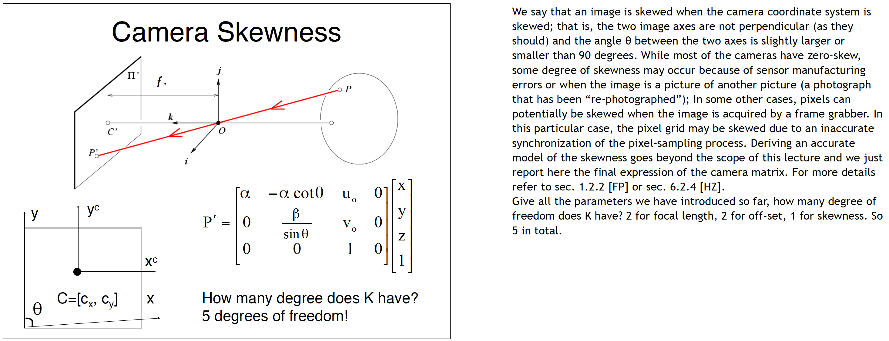
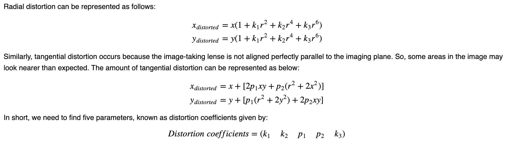
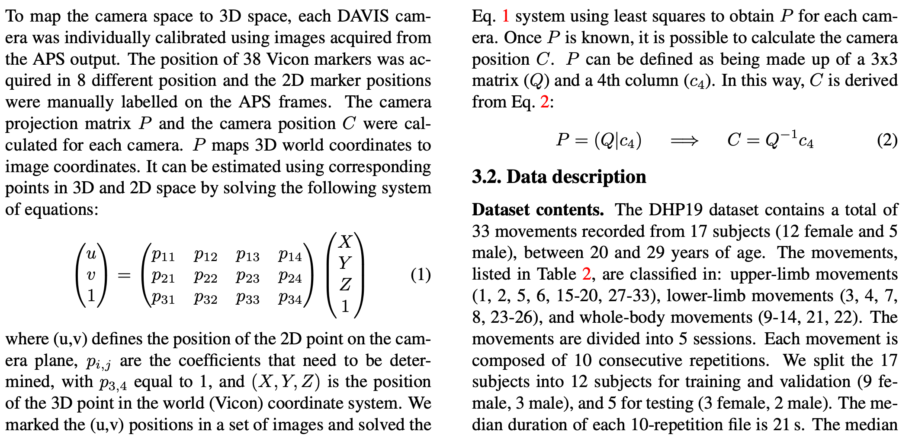
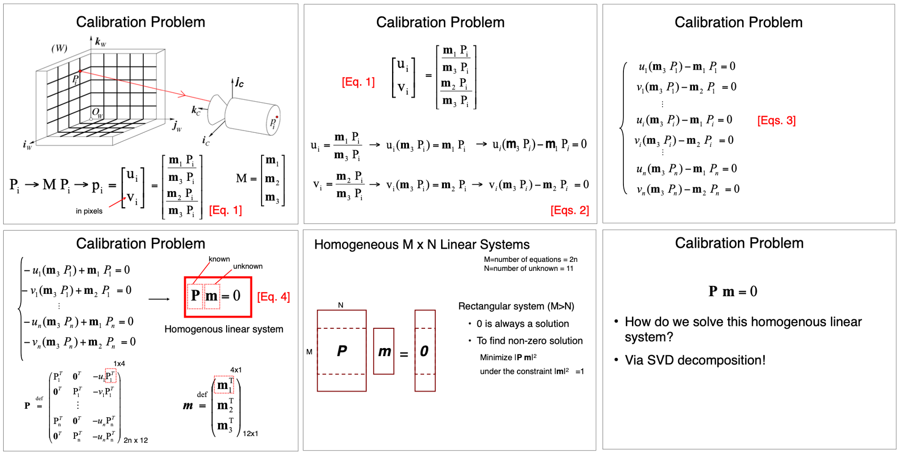
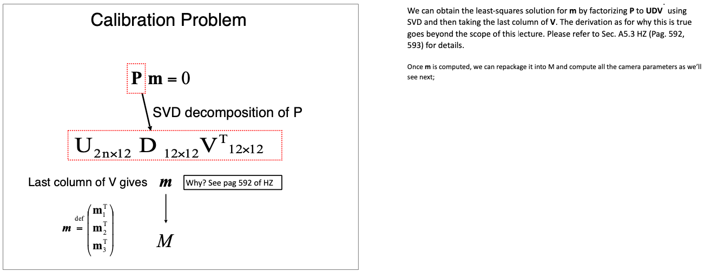
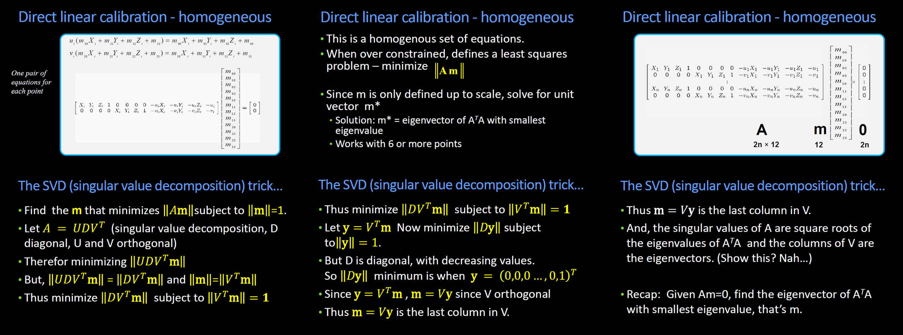

相机校准 相机标定 Intrinsic/Extrinsic Calibration详解 绝对Extrinsic矩阵测得实操 Event Camera/DVS
先提一下本文的发表理由。因为实验需要用到一个DAVIS 346的Event Camera，且项目需要通过Motion Capture（Mocap）得到人体的3D准确标定，所以就研究了一下相机的Intrinsic和绝对Extrinsic标定。令人吃惊的是，网上其实并没有太多关于如何通过实验方法标定得到相对于坐标原点（O点，Origin）的Extrinsic Matrix的讲解，尤其是缺少中文教程。于是我就把参考各种英文资料（主要是一些大学的slides和有关采集Mocap数据集的文献）总结的一些理论推导和实验方法，以及实际能用的代码整理得到了本文。
首先是几张非常重要的Slides，后面都会refer到，可以先自行熟悉下。另外，本篇不是100%从零开始的教程，篇幅限制并无法展开所有的细节，若想深度理解，请自行结合几个大学（CMU，Stanford）相应的Slides一起学习。

Coordinates
- 在整个相机的投影与校准过程中，一共涉及3个坐标系。它们分别是：
- 世界坐标系：以空间中某点为原点建立欧拉坐标系，设定xyz方向后形成的坐标系。
- 相机坐标系。该坐标系的原点是相机的焦点。焦点一般在相机内部，也可能落在的相机外部，这取决于focal length。坐标系的指向：x和y就是相平面的横纵坐标方向（相机视角方向），z是与xy平面垂直的方向，亦即镜头指向的前方。
- 图像坐标系（也可以分成两个：图像坐标系(m)和像素坐标系(pixel)）。值得注意的一点是每个像素并不是真正的一个点，pixel坐标系所代表的整数值是每个像素点的中心。
- 考虑功能性，还有一个同质坐标系，用于实际运算。
Intrinsic
-
理想状况下（无Skewness和Distortion），Intrinsic 矩阵Encode的信息有：Focal Length、Image Sensor的长宽（in pixel），每像素代表的米数(pixel/m)，也即相机的分辨率。
-
非理想情况下，Skewness和Distortion也会被放到Intrinsic中。
-
关于当提高/降低分辨率时候的Intrinsic变化：都要乘以分辨率提高的系数。

-
参见Intrinsic的计算过程，由于计算时已经考虑了目标物体深度对成像位置的影响，所以Intrinsic其实是包含了透视(perspective)信息的。
-
Intrinsic可使相机坐标系转化为图片坐标系。
Extrinsic
-
Extrinsic 可以看作是两个矩阵写在了一起：旋转矩阵R和平移矩阵T。前三列是R，最后一列是T。 其实，虽然经常写作，但事实上还有一个相似变换S，这个S是个对角线矩阵，对角线上的值为。S直接和R乘在一起，与T无关。
 -
Extrinsic可使世界坐标系转化为相机坐标系。
Skewness and Distortion
-
Skewness指的是相机Sensor的两个轴不垂直，即xy之间有一个小夹角。通常这不会发生，但如果有制造方面的问题，这也是可能的。
-
相机的Skewness
-
Skewness的解决方法是把这个夹角找到，并在Intrinsic中反映出来。

-
Distortion包含：
- Radial Distortion (径向畸变)：
- Tangential distortion (切向畸变)：本质上是相平面和相机坐标系存在一个夹角，即“图像Sensor和镜头截面不平行”。
-
关于Distortion的计算：

Homogeneous Coordinates
- 同质坐标的主要用意是把本来在分母上的z（深度）给挪走，以便让投影这个Transformation从non-linear变成Linear。
- 注意同质坐标虽然在视觉效果上是在原本的坐标(u,v)或(x,y,z)下面加了一个1，但是实际上这个1在欧式坐标系中并不存在。当我们后面列出方程校准时，应该回到原本的欧式坐标系解。
IMU
- IMU输出三个方向角速度和三个轴向加速度的值，使用时也需要校准。
- 具体校准方法参见Kalibr和DV，因为我没用上，所以不多展开。
DVS
- DVS的校准主要分为两种方法：
- 一种是直接用paired的RGB进行校准，毕竟这里的RGB和DVS share同一组透镜。
- 如果没有这个RGB，就直接用accumulate的frame做校准。
Methods
解方程直接校准P矩阵
-
在Paper DHP19: Dynamic Vision Sensor 3D Human Pose Dataset里， 他们采用的方法是：直接在经过Mocap校准的空间中放置一系列Markers，然后在DVS的RGB（APS）输出frame中直接进行手动标注，得到其在image plane中的坐标， 然后解方程。
 -
上图中提到了一个点：从投影矩阵计算相机坐标系的原点，即相机的焦点位置的方法：。具体的推理其实很简单，主要就靠一个条件公式：，即原点的投影是0。
-
细节上，他们用了38个Marker，并8次改变它们的位置，通过最小平方法解得最接近的11个P中参数值。这里的最小平方法的意义在于通过增加数据点取平均P值来减小误差。其实11组式子就够了，但这里还是用了个公式，就在于此。
-
具体的最小平方法介绍及代码：Link
-
这个全矩阵P其实包含了Camera Intrinsic K， Camera Extrinsic RT, 以及Camera Skewness。
-
理论：

 -
代码：
1
2
3
4
5
6
7
8
9
10
11
12
13
14
15
16
17
18
19
20
21
22
23
24
25
26
27
28
29
30
31
32
33
34
35
36
37# Least Square Calibration for Camera Projection Matrix using Numpy
def svd_calibration(points_3d, points_2d):
# points_3d: 3D points in world coordinate
# points_2d: 2D points in image coordinate
# return: projection matrix
assert points_3d.shape[0] == points_2d.shape[0]
assert points_3d.shape[1] == 3
assert points_2d.shape[1] == 2
num_points = points_3d.shape[0]
A = np.zeros((2 * num_points, 12))
for i in range(num_points):
A[2 * i, 0:4] = *(points_3d[i, :]), 1
A[2 * i, 8:12] = *(-points_2d[i, 0] * points_3d[i, :]), -points_2d[i, 0]
A[2 * i + 1, 4:8] = *(points_3d[i, :]), 1
A[2 * i + 1, 8:12] = *(-points_2d[i, 1] * points_3d[i, :]), -points_2d[i, 0]
U, S, V = np.linalg.svd(A)
P = V[:，-1].reshape((3, 4))
return P
# OR
# Least Square Calibration for Camera Projection Matrix
def least_square_calibrate_camera_projection_matrix_np(x,y,z,u,v):
# x,y,z: 3D points in world coordinate
# u,v: 2D points in image coordinate
# return: projection matrix
assert len(x) == len(y) == len(z) == len(u) == len(v)
num_points = len(x)
A = np.zeros((2 * num_points, 12))
for i in range(num_points):
A[2 * i, 0:4] = x[i], y[i], z[i], 1
A[2 * i, 8:12] = -u[i] * x[i], -u[i] * y[i], -u[i] * z[i], -u[i]
A[2 * i + 1, 4:8] = x[i], y[i], z[i], 1
A[2 * i + 1, 8:12] = -v[i] * x[i], -v[i] * y[i], -v[i] * z[i], -v[i]
U, S, V = np.linalg.svd(A)
P = V[:，-1].reshape((3, 4))
return P -
注意：SVD这里是用于解决Least Squares Problem的，如果直接用
np.linalg.lstsq函数的话（b取全0），会解得一个全0矩阵（因为0永远是一个解）。 -
SVD的解法细节：

-
解SVD的时候可以选择把P矩阵右下角设为1。不设是homogeneous解法，设了之后是inhomogeneous。
kalibr
-
Used for:
- Multi-Camera Calibration: Intrinsic and extrinsic calibration of a camera-systems with non-globally shared overlapping fields of view
- Visual-Inertial Calibration (CAM-IMU): Spatial and temporal calibration of an IMU w.r.t a camera-system along with IMU intrinsic parameters
- Multi-Inertial Calibration (IMU-IMU): Spatial and temporal calibration of an IMU w.r.t a base inertial sensor along with IMU intrinsic parameters (requires 1-aiding camera sensor).
- Rolling Shutter Camera Calibration: Full intrinsic calibration (projection, distortion and shutter parameters) of rolling shutter cameras.
-
校准出来的Extrinsic结果并不是相对原点绝对的，而是多个设备间相对的。比如IMU+Cam校准出来的Extrinsic就是IMU相对于Cam坐标的变换。
引用一段原话：
- T_cn_cnm1
camera extrinsic transformation, always with respect to the last camera in the chain
(e.g. cam1: T_cn_cnm1 = T_c1_c0, takes cam0 to cam1 coordinates) - T_cam_imu
IMU extrinsics: transformation from IMU to camera coordinates (T_c_i) - timeshift_cam_imu
timeshift between camera and IMU timestamps in seconds (t_imu = t_cam + shift)
- T_cn_cnm1
-
综上所述，Kalibr并不是满足我们需求的校准方案。
DV Calibration
- Tutorial Link, Code Link
- 单个多个DVS都可以。
- 基于Kalibr的方案。
- 对于单个DVS，校准主要进行的是undistortion，且可以在校准后直接应用于相机后续的图像，让后面的record都不再有失真。
- 这里的校准可以有效应对之前Upal教授提出的扭曲问题，应在后续操作中应用。
OpenCV Camera Calibration
-
这个校准会使用chessboard，而关于3d坐标，他们用了棋盘上两个相邻的点的实际距离是已知的这个特性（因为打印的标准棋盘，间距是固定的，如30mm），来提供相应的3D坐标信息。
-
这个校准会分别输出Intrinsic matrix (mtx), rotation matrix (R, rvecs), translation matrix (T, tvecs), Distortion coefficients (dist)。这些输出可以直接被用来纠偏。
1
2
3
4
5
6
7
8
9
10
11
12
13# generate camera matrixes
ret, mtx, dist, rvecs, tvecs = cv.calibrateCamera(objpoints, imgpoints, gray.shape[::-1], None, None)
img = cv.imread('left12.jpg')
h, w = img.shape[:2]
newcameramtx, roi = cv.getOptimalNewCameraMatrix(mtx, dist, (w,h), 1, (w,h))
# undistort
dst = cv.undistort(img, mtx, dist, None, newcameramtx)
# crop the image
x, y, w, h = roi
dst = dst[y:y+h, x:x+w]
cv.imwrite('calibresult.png', dst) -
关于OpenCV校准出来的Extrinsic Matrix，由于世界坐标系必定有一个原点，所以它们也是毫无疑问有一个原点的。但这个世界坐标系原点实际上只有参考意义（第一张校准图的左上角棋盘点），并无法直接使用。同时，相机坐标系的原点是相机的焦点，而这个焦点也是几乎不可预知和测量位置的（它可能在相机内部或外部，但校准并不会告诉你这个点位置，所以你也无法通过直接测量相机O点和实际世界O点之间的相对位置来纠正Extrinsic。）
Link: I believe it used to be the position of the top-left corner of the checkerboard in the first calibration image, but it may have changed. You can visualized it by writing a few lines of code that project point (0,0,0) (in calibrated scene coordinates) in all the calibration images, then plotting its projected image coordinates on top of the image themselves.
You should really not depend on it being anything meaningful, and instead locate a separate feature in 3D and roto-translate the reference frame to it after calibration.
-
实际上，不要想通过OpenCV的校准来直接得到有实际意义的Extrinsic，若想得到，请自行用前面提到的Method 1来实际label一些已知3D坐标的Markers对应的2D点，用Least Squares解得。
-
但是，OpenCV的校准可以提供有效的Distortion Coefficient和Intrinsic，并可直接被用于畸变补偿。
Reference
Blogs/Websites
- Least Squares Regression in Python
- Why does SVD provide the least squares and least norm solution to 𝐴𝑥=𝑏?
- How does the SVD solve the least squares problem?
- What is the “real world coordinate system” camera calibration refer to in computer vision?
- numpy linalg svd
- OpenCV Camera Calibration
Slides
- Udacity CS4495/6495 Introduction to Computer Vision 3C-L3 Calibrating cameras
- CMU - Camera Matrix
- Stanford - Lecture 2
- Stanford - Lecture 3